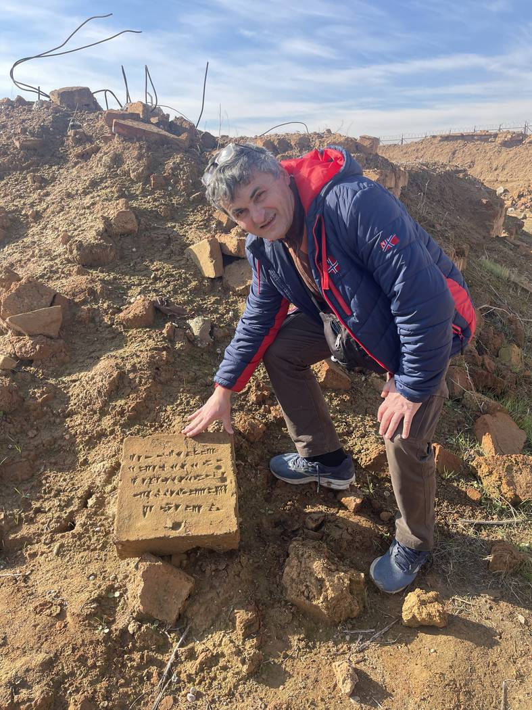
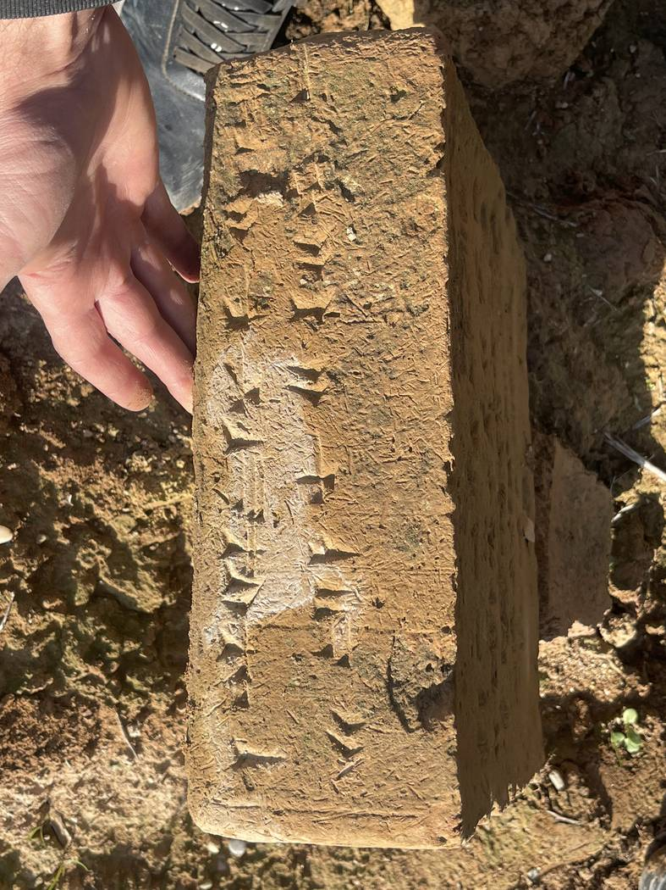

Ашшур (Кал'ат-Шаркат)
Наше путешествие начинается в сердце Багдада на рассвете, когда северная дорога ещё тиха, и мы поднимаемся вдоль Тигра к провинции Найнава. Первая остановка на этом маршруте — не просто разрозненные руины, а сам город, из которого родилась вся Ассирийская империя: Ашшур, известный сегодня как Кал'ат-Шаркат, стоящий на скалистом выступе над западным берегом Тигра. Именно отсюда поднялась одна из величайших держав древнего мира, и именно с этим местом ассирийцы связывали свою духовную идентичность ещё долго после того, как перенесли политические столицы на север.
Само название хранит ключ к пониманию города. Ашшур — это не только топоним, но и имя верховного бога ассирийского пантеона, бога, чьё имя носил народ и который, в свою очередь, носил имя своего города. Это тройственное тождество бога, города и народа делает Ашшур уникальным среди месопотамских городов. Если Вавилон был городом Мардука, а Ур — городом бога луны Нанны, то Ашшур был обителью самого национального бога, и его великий храм оставался центром, вокруг которого вращалась легитимность каждого ассирийского царя. В глазах ассирийцев царь был лишь земным наместником бога: он правил его именем, водил его войска и строил его храмы.
Почему именно здесь? Место и география
Когда вы стоите на краю скалистого уступа и смотрите, как Тигр изгибается под вами, становится ясно, почему было выбрано это место. С трёх сторон город защищали река и обрывы, что делало его природной крепостью, которую трудно было взять штурмом. Кроме того, он находился в стратегической точке на торговом пути, связывавшем южную Месопотамию с Анатолией и Левантом. Это сочетание естественной защиты и торгового положения дало Ашшуру возможность возникнуть и просуществовать тысячи лет, оставаясь почти непрерывно обитаемым с третьего тысячелетия до н. э. вплоть до раннеисламской эпохи.
От торговой фактории к имперской столице
Ашшур был заселён самое позднее в третьем тысячелетии до н. э., а возможно, и раньше. В начале второго тысячелетия, в так называемый «староассирийский период», Ашшур ещё не был воинственным царством, а был проницательным купеческим городом-государством. Его торговцы водили караваны ослов, нагруженных оловом и тканями, за сотни километров на Анатолийское плоскогорье, где основывали торговые колонии, самая знаменитая из которых — «карум Канеш» близ Кюльтепе в современной Турции. Именно из этой колонии до нас дошли тысячи глиняных табличек, написанных клинописью, и они с поразительной подробностью раскрывают жизнь целых купеческих семей: договоры о партнёрстве, письма жён к отсутствующим мужьям, споры о долгах, счета прибылей и убытков. Благодаря этим табличкам Ашшур принадлежит к числу лучше всего документированных городов древнего мира с точки зрения повседневной экономической жизни.
С течением столетий торговый город превратился в военное ядро. Появились великие цари, такие как Шамши-Адад I, объединивший под своим знаменем север Месопотамии. Затем настала пора смут, когда Ашшур на время подпал под влияние Митанни и хеттов. Однако главный перелом наступил при Ашшур-убаллите I в четырнадцатом веке до н. э.: он провозгласил Ашшур независимым царством международного значения и переписывался с фараонами Египта в «Амарнских письмах» на равных, требуя золота и признания. С этого момента Ашшур начал долгий путь к превращению в империю, которая впоследствии будет править пространствами от берегов Нила до гор Ирана.
Богословие бога Ашшура и праздник Нового года
Религия в Ашшуре была делом сугубо государственным. Бог Ашшур был не просто владыкой города, но воплощением самого государства и его судьбы. Одним из важнейших обрядов ассирийцев был «акиту» — праздник Нового года, когда статуя бога выходила в торжественной процессии из своего храма в «дом акиту» за городом. Это празднество обновляло легитимность царя и освежало связь народа с его богом. В такие дни город наполнялся посольствами и жертвоприношениями, звучали гимны и мифы, повествующие о победе космического порядка над хаосом. Именно это обрядовое измерение объясняет, почему Ашшур оставался «священным городом» даже после того, как цари его покинули, и почему они неизменно возвращались сюда для великих торжеств и для погребения.
Цари-строители и боги из камня
Ассирийские цари были не только воинами, но и строителями, одержимыми стремлением увековечить своё имя в камне и кирпиче. Царь Тукульти-Нинурта I в тринадцатом веке до н. э., сокрушив Вавилон и увезя статую Мардука на север, построил новый город напротив Ашшура. Тиглатпаласар I расширил границы державы на север и запад, восстановил храмы и записал свои анналы пышным языком, описывая походы и охоту на львов и слонов. Придя сегодня на городище Ашшура, вы идёте по напластованиям этих строительных замыслов: каждый слой — это царь, пытавшийся оставить свой след поверх следов предшественников, пока город не превратился в каменную книгу, читаемую от самых глубоких страниц к самым поздним.
Среди наиболее заметных сохранившихся сооружений — огромный зиккурат, посвящённый богу Ашшуру, ступенчатая башня, некогда возвышавшаяся искусственной горой, чтобы соединить землю и небо. Рядом лежат остатки храма Ану и Адада с двумя зиккуратами, посвящёнными богу неба Ану и богу бури Ададу. Есть здесь и храм Иштар, богини любви и войны, один из древнейших в городе, который цари перестраивали снова и снова на протяжении веков, так что раскопки выявили последовательные храмовые слои, наложенные один на другой и дающие исследователям редкую картину развития культовой архитектуры на протяжении более тысячи лет.
На территории города находятся и царские гробницы, где несколько ассирийских правителей были погребены в каменных склепах под своими дворцами. Ассирийский царь не покидал священный город даже после смерти: сколь бы величественной ни становилась его политическая столица, Ашшур оставался последним «домом», куда возвращалось его тело. Эта символическая связь между легитимностью власти и священной землёй Ашшура сохранялась до последних дней империи.
Стены, ворота и живой город
Ашшур был опоясан мощными стенами, которые цари укрепляли из поколения в поколение; их прорезали главные ворота, служившие одновременно пунктами прохода, местами сбора пошлин и площадками для обрядов. За стенами простирались жилые кварталы, мастерские, склады и малые храмы, открывающие нам город, пульсировавший жизнью, а не просто царскую резиденцию. Археологи обнаружили архивы и административные документы, рисующие подробности повседневности: распределение довольствия, управление храмами, судебные тяжбы и приговоры. Всё это делает Ашшур живой лабораторией для понимания того, как управлялся большой древний город.
Падение и долгое молчание
В 614 году до н. э., когда Ассирийская империя шаталась под ударами коалиции мидийцев и вавилонян, священный город Ашшур пал. Мидийцы взяли его штурмом, разграбили и сожгли, и падение города-матери возвестило конец всей империи, которая полностью рухнула несколькими годами позже, с падением Ниневии в 612 году до н. э. Картина была столь трагичной, что её отголоски сохранились в текстах еврейских пророков, говоривших о конце «города крови», и в памяти многих народов, испытавших мощь ассирийских армий.
Но история Ашшура на этом не закончилась. После веков молчания жизнь вернулась сюда в парфянскую эпоху, когда на его руинах возникло новое поселение и были возведены храмы в стиле, соединявшем местные традиции с эллинистическим и парфянским искусством, — примерно в тот же период, когда расцвета достигал соседний город Хатра. Так что посетитель Ашшура сегодня читает в его слоях непрерывную историю, простирающуюся от третьего тысячелетия до н. э. до первых христианских веков, когда этот край стал родиной древних христианских общин, и поныне дорожащих своими ассирийскими корнями.
Взгляд археолога: Андрэ и немецкие раскопки
Заслуга систематического научного открытия Ашшура принадлежит экспедиции Германского восточного общества под руководством археолога Вальтера Андрэ, работавшей с 1903 по 1914 год. Андрэ был не просто землекопом, а скрупулёзным архитектором, который рисовал, фиксировал и документировал город с методичностью, изменившей практику раскопок на всём Ближнем Востоке. Он стремился задокументировать каждый слой и восстановить первоначальный облик зданий по остаткам, а не просто извлечь ценные предметы. Благодаря его работе важные фасады и находки были перевезены в Пергамский музей в Берлине, тогда как многое осталось на месте свидетельством о городе. Когда вы сегодня стоите среди стен, то, что вы видите упорядоченным и понятным, — плод десятилетий терпеливого научного труда.
Ашшур в опасности… и Ашшур устоявший
В начале третьего тысячелетия Ашшур был внесён в Список всемирного наследия ЮНЕСКО в 2003 году и одновременно помещён в Список всемирного наследия, находящегося под угрозой, из-за проекта плотины, водохранилище которой грозило затопить памятник. Затем годы террористической оккупации края добавили угрозу иного рода. И всё же Ашшур устоял — как выстоял прежде против мидийцев и вавилонян и против самого забвения. Сегодня сюда постепенно возвращаются посетители, возвращаются исследователи, возвращается жизнь, которую история не раз пыталась погасить.
Когда вы стоите на краю скалистого выступа в Ашшуре и смотрите, как под вами течёт Тигр — так же, как он тёк пять тысяч лет назад, — вы понимаете, почему ассирийцы выбрали именно это место домом своего бога. Здесь всё дышит древностью, и тишина тут — не пустота, а полнота историй. Советуем не спешить и не торопясь пройтись между зиккуратом, храмами и стенами, взять с собой воду и надеть удобную обувь: земля неровная, а пространства обширны. Отсюда, унося с собой дух города-прародителя, мы направляемся к следующей остановке — городу совсем иного склада, арабско-парфянскому пустынному городу по имени Хатра.

